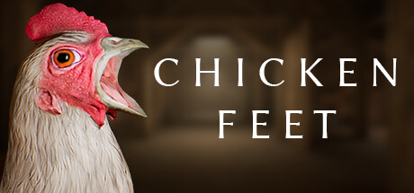
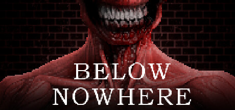

Chicken Feet
Chicken Feet is a first person survival-stealth horror game about a giant, angry chicken. Descend into the depths of GOOBER laboratories and uncover the horrors that lie beneath the lab's shiny façade.
My name is Dylan Bassett and I'm a game developer and technical designer from the suburbs of Chicago, Illinois. I currently study Games and Interactive Media at Michigan State University with a minor in business.
I'm very proficient in Unreal Engine as a whole with a specialization in design & Blueprint and C++ programming. I've been making games for 14 years and using Unreal for over six.
My interests outside of game dev include reading and writing stories, cardio, physics, horror media, and spaceflight history. I'm also a private pilot.

Chicken Feet is a first person survival-stealth horror game about a giant, angry chicken. Descend into the depths of GOOBER laboratories and uncover the horrors that lie beneath the lab's shiny façade.

Below Nowhere is a first-person survival horror game that will pull you into the depths of evil. While exploring strange memories that aren't yours, you will be pushed to your limits in this terrifying tale of humanity and second chances.
Suddenly alone in a snowstorm, a camper is haunted by strange visions. A short, cinematic, mind-bending psychological horror nightmare. Beware the rifleman.